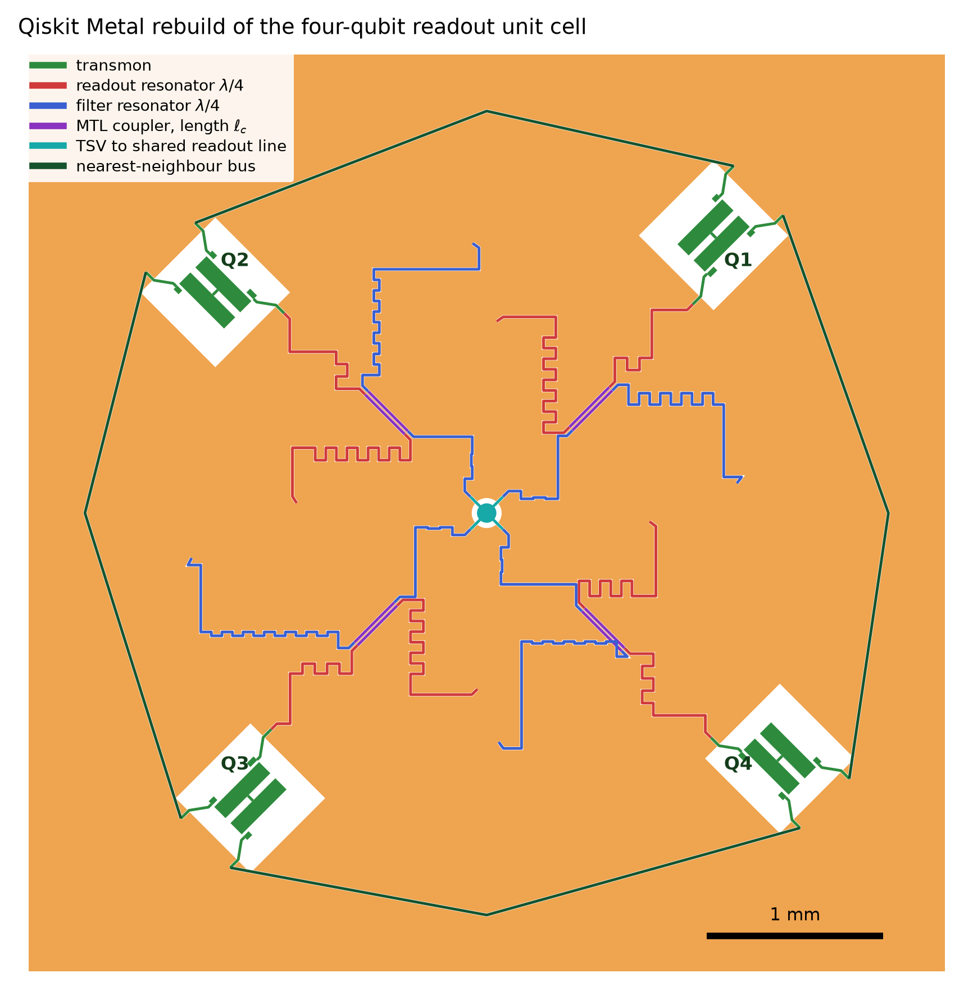

Quantum Metal Database for Superconducting Circuit by Tarang (QMDSCT)

Projects
-
qiskit-metal-resonator/Quarter-wave CPW readout resonator coupled to a feedline — Qiskit Metal layout, GDS export, analytic CPW model.

qiskit-metal-resonator/
Quarter-wave CPW readout resonator coupled to a feedline — Qiskit Metal layout, GDS export, analytic CPW model.